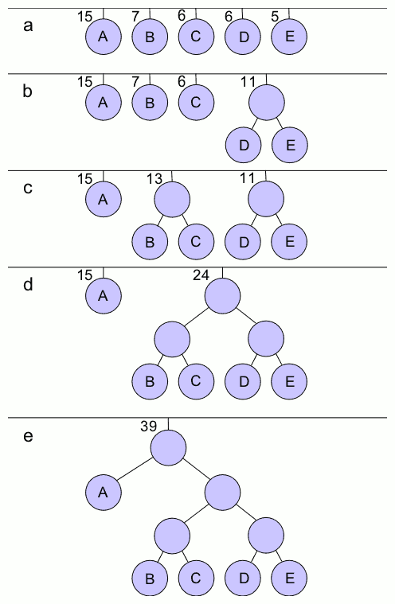
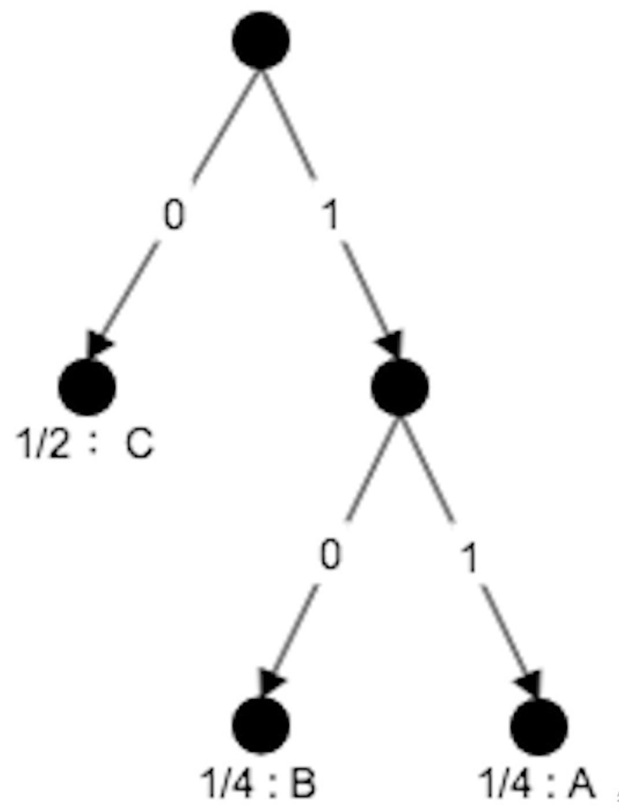

Entropy (information theory), also called Shannon entropy, a measure of the unpredictability or information content of a message source.
Huffman Coding Tree
To shorten the length of symbol encoding, people naturally hope that the higher the frequency of symbols, the shorter its encoding, so as to save the storage space.
Huffman coding is a kind of data compression (encoding) algorithm based on a special binary tree (Huffman coding tree) and can solve the issue above. It assigns codes to characters (or any discrete source symbols) such that the length of the code depends on the relative frequency or weight of the corresponding character.
The output from Huffman’s algorithm can be viewed as a variable-length code table. The algorithm derives this table (encoding) from the estimated probability or frequency for each possible symbol value as below:
- Given a set of symbols and their weights (usually proportional to probabilities). Find a binary tree with minimum weighted path length (path length $\times$ leaf-node weight) from the root, which will put the symbol with the low weight far away from root and vice versa.
- Select two adjacent nodes with the lowest sum of weight and create a new parent node whose weight is this sum. Do this process iteratively until the only root node is created.

After building the Huffman coding tree, each symbol can be:
Encoding: We can encode the symbol following the path from the root to its leaf-node. As a common convention, bit ‘0’ represents following the left child, and bit ‘1’ represents following the right child.
Encoding a string can be done by replacing each letter in the string with its binary code (the Huffman code).
Decoding: Decoding an encoded string can be done by looking at the bits in the coded string from left to right until a letter decoded.
Entropy
Generally, entropy refers to disorder or uncertainty (a large entropy represent a great disorder), and the entropy used in information theory can reflect the informative extent of the event.
When the data source produces a low-probability event, the event carries more “information” than when the high-probability event. Obviously, it has the same inner logic as Huffman Coding, so the probability of the event can be encoded by Huffman Coding Tree, and from it, we can compute the amount of information (information entropy) the event carries.
Information entropy is defined as the expected rate (bits), which is actually the expected length of the Huffman Coding Tree path (one edge in path represents 1 bit coding). The measure of information entropy is the negative logarithm of the probability mass function for the value:$$S=-\sum _{i}P_{i}\underbrace{\log {P_{i}}}_\text{Length of Huffman Tree Path}=-\operatorname {E} _{P}[\log P]\geq0$$, where ${E} _{P}[X]=\sum _{i}P_{i}X_{i}$ is the expectation defined by the probability $P$.
For example:
A discrete random variable $X$ whose distribution $Q$ has three events: $A: \frac{1}{2}$, $\quad B: \frac{1}{4}$, $\quad C: \frac{1}{4}$. So the events $A, B,C$ can be encoded by Huffman Tree as below:

The information entropy of $X$ is:$$H(Q)=-\frac{1}{2} \log _{2}\left(\frac{1}{2}\right)-\frac{1}{4} \log _{2}\left(\frac{1}{4}\right)-\frac{1}{4} \log _{2}\left(\frac{1}{4}\right)=1.5$$
Cross-Entropy
In information theory, the cross entropy between two probability $p$ and $q$ (over the same underlying set of events) measures the average number of bits needed to identify an event drawn from the set if a coding scheme is optimized for an estimated probability distribution $Q$, rather than the true distribution $P$.
Shortly, the cross-entropy is the expected rate (bits) if the Huffman Tree is constructed according to the estimated distribution rather than the true distribution.
Continue the example in Entropy:
- The estimated distribution is $A: \frac{1}{2}$, $\quad B: \frac{1}{4}$, $\quad C: \frac{1}{4}$, while the actual distribution is $A: \frac{1}{4}, \quad B: \frac{1}{4}, \quad C: \frac{1}{2}$, the expected rate (bits) will thus be computed as:$$H(P, Q)=-\frac{1}{2} \log _{2}\left(\frac{1}{4}\right)-\frac{1}{4} \log _{2}\left(\frac{1}{4}\right)-\frac{1}{4} \log _{2}\left(\frac{1}{2}\right)=1.75$$
KL-Divergence
The KL-Divergence (Kullback–Leibler divergence, also called relative entropy) is a measure of how one probability distribution is different from a reference probability distribution.
KL-Divergence is actually the expected extra bit length if a code that is optimal for a given (wrong) distribution $Q$ is used, compared to using a code based on the true distribution $P$. Thus, it is the difference between Cross-Entropy and Entropy:
$$D_{\mathrm{KL}}(P | Q) = H(P, Q) - H(Q)\geq0$$
Cross-Entropy minimization
Cross-entropy minimization is frequently used as a loss function in optimization. It has the following properties:
- When comparing a distribution $P$ against a fixed reference distribution $Q$, cross-entropy and KL divergence are identical up to an additive constant (since $Q$ is fixed).
- Both of them take on their minimal values when $P=Q$, which is $0$ for KL divergence, and $H(P)$ for cross-entropy.
- Both of them are continuous and differentiable which benefits the gradient computation.
Reference
Blog: 详细图解哈夫曼Huffman编码树
Blog: 数据结构和算法Implementation——Huffman树和Huffman编码
Blog: Huffman coding
Blog: 熵与信息增益
Blog: KL散度与交叉熵区别与联系
Zhihu@erwin: 如何通俗的解释交叉熵与相对熵?